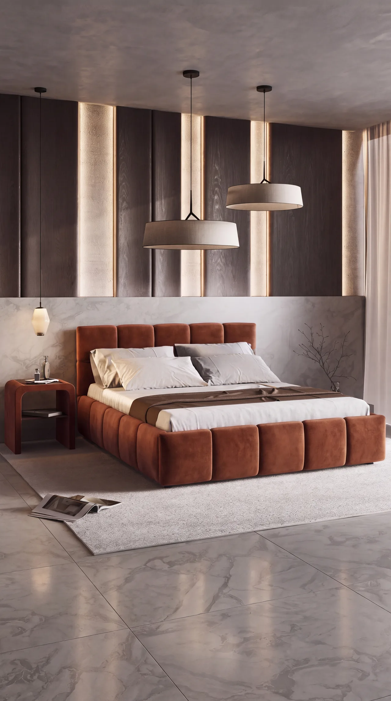
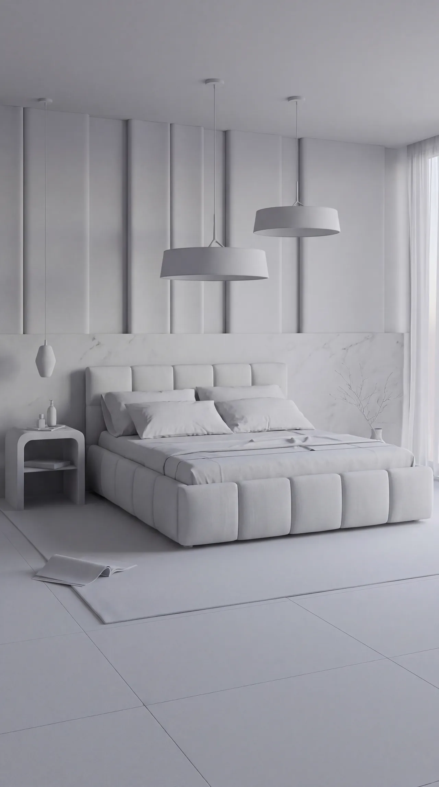
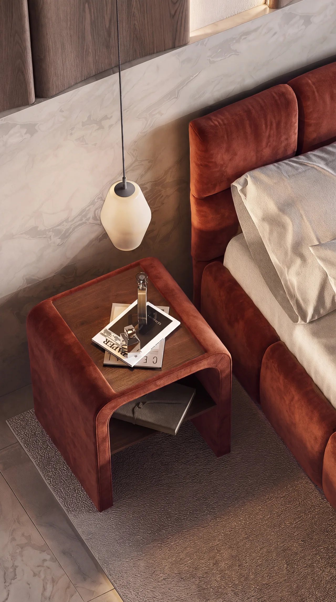

Interior for a velvet bed and nightstand
An upholstered bed and nightstand in a calm bedroom with timber panels and a marble band. One scene in two velvet colorways, plus the nightstand shot in five fabrics.
- My part
- Bed modeling, scene, materials, lighting, rendering, cinematic camera motion. The nightstand model was supplied.
- Year
- 2026


ClayFinalFrom clay to velvet
The clay render checks proportions, folds and light before any material goes on. The final shot keeps the same camera and lighting.
Drag the handle or use the arrow keys to compare.
- Style
- Modern minimalism with a warm, quiet-luxury mood.
- Materials
- Upholstery: velvet (terracotta, gold, chocolate), ochre chenille, sand bouclé; dark oak wall panels with backlit stone inserts, marble band and marble floor tiles, linen bedding, wool rug.
- Lighting
- Soft daylight through sheer curtains, warm LED lines between the panels, two pendant lamps over the bed.
- Software
- 3ds Max: modeling and scene. Corona Renderer: materials, light, render. Photoshop: post-production. Cinematic camera motion from the stills.

Five fabric options
The same nightstand shot in five upholstery fabrics, for a catalog or a configurator.
Terracotta velvet
Gold velvet
The same scene with a second colorway.
Fabric options
Nightstand from above in five fabrics.
Camera animation
Short cinematic camera moves built from the still renders.
Clay renders
Used to check form and light before materials.
Model topology
The bed frame I modeled: a clean quad mesh that is easy to resize and re-upholster. The bedding is not my model.
3ds Max viewport
The working scene before rendering.